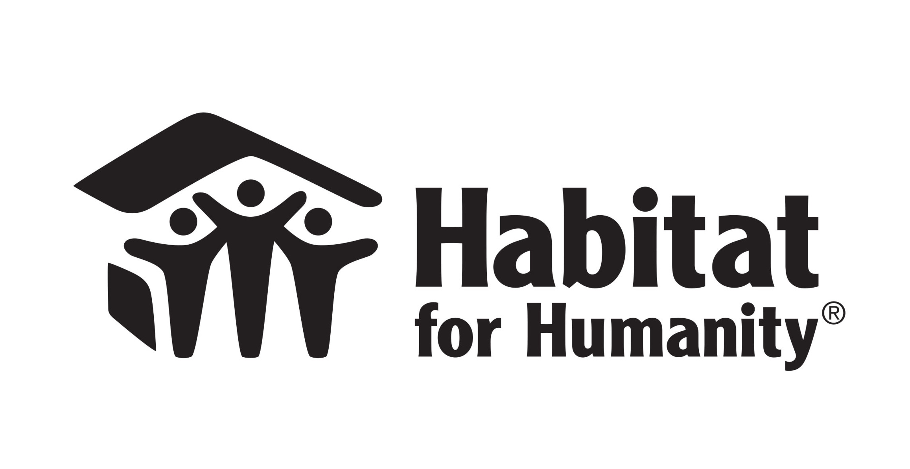
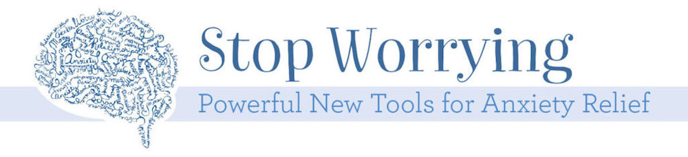

Volunteering and Community Outreach
"Habitat works toward our vision by building strength, stability and self-reliance in partnership with families in need of decent and affordable housing. Habitat homeowners help build their own homes alongside volunteers and pay an affordable mortgage.."

Volunteer Today!
Overcoming a Traumatic Brain Injury
"Millions of people worldwide need increased access to neurorehabilitation..
Let's fix this now." - Emilia Clarke (Game of Thrones)
"..As more people recover from brain injury and stroke because of improvements in acute care, we urgently need a major initiative to propel neurorehabilitation support services to the forefront."
Click on the link
SameYou.org to discover more about this initiative, and how you can help today!
Instagram:
Emilia Clarke
Self-Improvement Tips/Tricks
Free training, tools, and events to help you grow your skills, career, or business.
Grow with Google
Comprehension and utilization of an Integrated model of Leadership...Figuring out your learning style and Briggs Myers Type...Staying educated- always continuing to learn: ...Udemy...W3 schools...Developing Negotiation Skills...Developing sounds morals and ehtical standards (resources for poverty and those with poor economic status' lack of leadership in the community/household..Being cognizant that you are not seen as Laissez-faire..
USA Facts
"Our Nation, in numbers."
- How does the money flow in and out of governement?
- Who are "the people?"
- What is the impact of government?
- What are the questions to ask?
Find answers to these questions, and more at
USA Facts.org!
Overcoming Anxiety

Activating your calming "Parasympathetic" response
"..When you are controlled by panic you are run by your Negative Observer voice: "I can't..." ("I can't feel this way." "I can't get anxious, because someone will notice." "I can't handle this experience.") As you begin to gain control over panic, you will notice that your voice shifts to that of the Supportive Observer: "It's OK...I can..." ("It's OK to feel this way." "I can be anxious and still perform my job." "I can mange these symptoms.")"
Using paradox, you progress to the opposite end of the continuum. You take full responsibility for your symptoms by inviting them.." (Step 6)
Click the link below to read the full article:
Anxieties Article: Panic Steps
Fiscal Responsbility and Financial Wellbeing
Digital Communication vs. P2P...Developing positive self talk...taming your inner critic...moderating tech use throughout the day... Develop Spontaneity. I think that everyone should take an improvisation class to be more comfotable adapting to change.
Ways to counter balance society's gravitational pull towards conformity, fads, & trends
Digital Communication vs. P2P...Developing positive self talk...taming your inner critic...moderating tech use throughout the day... Develop Spontaneity. I think that everyone should take an improvisation class to be more comfotable adapting to change.
Resource and curriculum to get elders up to par with technology
"It is possible to live without a phone...ref 'Flannel boards'... "
[Identifying] and Becoming a Great Leader (can cite material from pptx. for BMGT class)
Being intentful...Ways to negotiate and defend yourself...(Pull data from BMGT Slides on Negotiation)...Leading-(Inspire..Influence..Create the vision and strategic plan)
vs. Managing (Implement..Plan..Organize..Control "POLC")
Developing your own "Trait" approach ex: having task relevant knowledge = helping promote yourself for an interview (BMGT-Ch.13 slide 12)..Recognizing the becoming a leader is an acquired skill- developing a balance of task oriented leadership, directing your focus towards initiating structure and transactional leadership...
using these traits intermittently vs. Relationship-Oriented Leadership (Ch.13-Slide 21)..Exuding Servant Leadership "putting others before yourself; altriusm.." and Ethical Leadership skills (ex: "Focus is on being a moral role model"..Becoming a situational leader..
Applying Contingency Theories
Step 1: Identify important outcomes.
Step 2: Identify relevant leadership behaviors.
Step 3: Identify situational conditions.
Step 4: Match leadership to the conditions at hand.
Step 5: Determine how to make the match.
Developing character
Show Affection towards your self-worth:
How to cultivate and replenish your own personal gratification center in your mind and in your body..
Developing character:
1. Charisma: a form of interpersonal attraction that inspires acceptance, devotion, and enthusiasm.
2. Exuding Idealized influence: instilling pride, respect, and trust within others
3. Implementing Practical Problem-Solving Techniques (2 of 2)
4. Cultivating, Stimulating & Promoting Creativity [in our youth]
5. Utilizing and mastering Evidence-Based Decision Making skills..Learning to frame your response in a STAR concept
How to exude positive energy....how to switch task effectively...Learning to curve your impulsivities...The benefits of using a timer --> enhance productivity/sense of accomplishment...Take time to unwind- and do something enjoyable to you.
Hotlines and Tips
resource section (gambling problem…spousal abuse, domestic violence, bullying, combating
depression anxiety suicidal thoughts…)
Utilize mom's grief and loss course... With technology getting people to experience through simulation hardships and the wisdom acquired through...Medical Terminology Shorthand Reference
- Practice diplaying Empowerment...
- Exuding self-confidence...the rehearsal of initial interaction with our peers..
- During job interviews..
- Confrontations...'There’s gotta be a way to expedite maturity without going through physical hardships'...
- Understanding and Implementing the Two Fundamental Perspectives of Motivation (KiniC05 Final R(1))